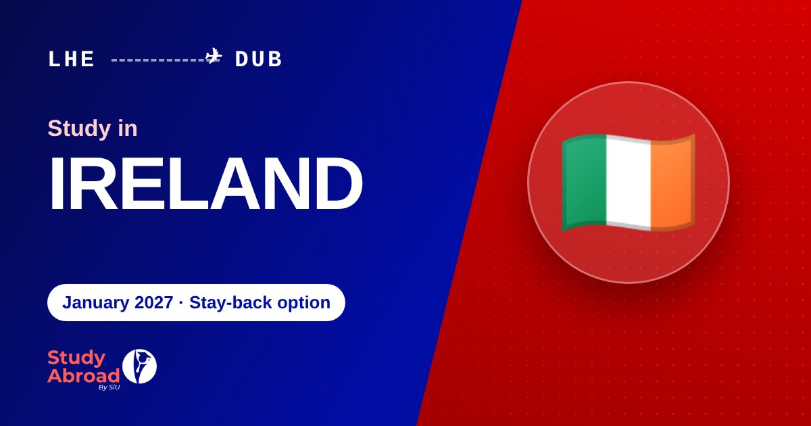

Ireland Student Visa from Pakistan 2027: Financial Requirements, Work Rights & Stamp 1G
A 2027 guide for Pakistani students covering Ireland study visa finances, six-month bank statements, Stamp 2 work hours, private insurance and Stamp 1G.

What Pakistani students should know
- Visa-required students on a one-year course must show immediate access to at least €10,000 for living costs, in addition to course fees.
- For courses resulting in a stay of 6–8 months, the published amount is €833 per month or €6,665, whichever is the lesser.
- Eligible Stamp 2 students can generally work 20 hours per week during term and 40 hours during specified holiday periods.
- Stamp 1G is a separate graduate permission with eligibility and time limits; it is not automatic for every course.
Ireland attracts Pakistani students who want an English-speaking study destination within the European Union. It has universities and colleges offering programmes in business, computing, engineering, health sciences and other fields. Before choosing a course, however, applicants should understand the student-visa process, the financial evidence requirement, the conditions attached to student permission and the limits of post-study options.
This guide focuses on the practical requirements for Pakistani students planning a 2027 start. Rules and amounts below reflect official Irish immigration information available on 8 November 2026. Always check the live government guidance and your institution's instructions before paying fees or submitting a visa application.
1. Choose an eligible full-time programme
Begin with the programme, not simply the country. Check that the institution is recognised and that the course is eligible for international student immigration permission. For non-EEA students, the programme normally needs to meet the relevant full-time study requirements and appear on the applicable official list, such as the Interim List of Eligible Programmes (ILEP) where required.
Review the course content, award level, duration, tuition fees, academic entry requirements and English-language requirements. A programme that looks attractive in an advertisement may not suit your previous education or career goals. Ask the institution to confirm the award level and the immigration eligibility of the exact programme and intake.
2. Understand the Irish study visa process
Pakistani citizens generally need an entry visa to travel to Ireland. For a course lasting more than 90 days, students normally apply for a long-stay study visa (often called a D study visa) after receiving the required acceptance documentation and preparing the supporting file.
Admission and visa permission are different decisions. The college or university decides whether to offer you a place. Irish immigration authorities assess whether you meet the visa requirements, including the course, academic ability, English-language ability, finances and the credibility of your study plan.
Use the official Irish Immigration Service study information and the current long-stay study-visa instructions. Follow the application route and document submission instructions that apply to your place of residence.
3. How much money must you show?
For visa-required students, Irish Immigration Service Delivery states that applicants for academic courses beginning after 1 July 2023 must show immediate access to at least €10,000 for a course resulting in a stay of one year. This is an estimate of living costs for one academic year and is separate from tuition fees.
You must also show ready access to at least €10,000 for each subsequent year of study, in addition to the course fees for those years. For a course that results in a stay of less than eight months, the published requirement is €833 per month of stay or €6,665, whichever is the lesser. Confirm the correct calculation for the duration of your own course on the official finance page.
Do not confuse this amount with a total budget for the whole degree. Tuition, accommodation deposits, insurance, travel and personal expenses are separate costs. The €10,000 figure is a financial-evidence benchmark, not a guarantee that it will cover every student's actual living costs in every Irish city.
4. Bank statements and sponsor evidence
Irish immigration guidance says visa-required students must provide an up-to-date bank statement showing money paid into and out of the account over the previous six months, whether the student is paying independently or has a sponsor. The documents must make it clear that the applicant can access the funds needed for the course.
If a parent or another sponsor is supporting you, prepare the sponsor's financial evidence and explain the relationship and the support being offered. Include the documents requested by the visa instructions, such as proof of relationship, sponsor employment or income evidence and a signed explanation of the financial arrangement where applicable. The exact documents depend on your circumstances.
Make sure the account history is genuine and understandable. Large recent deposits should have a clear, documented source. A one-day balance screenshot is not a replacement for the required statement history. Do not submit altered statements, unexplained borrowed money or documents that cannot be verified.
5. Tuition fees, insurance and other costs
Check the tuition fee directly with the institution and read its payment schedule and refund policy. Keep official receipts and payment confirmations. Your visa file should make it clear which fees have been paid, what remains outstanding and how the balance will be funded.
Non-EEA students coming to Ireland for study need private medical insurance. Confirm the level of cover accepted by the institution and immigration authorities, the period covered and whether the policy must be purchased before travel or registration. Also budget for accommodation, local transport, food, books, visa-related costs and the immigration registration fee where applicable.
Do not base your financial plan on finding a job immediately after arrival. Immigration authorities expect students to show that they can support themselves without relying on casual employment. Part-time work is subject to immigration conditions and availability is not guaranteed.
6. Can students work part-time in Ireland?
Students with a valid Stamp 2 permission who are enrolled on an eligible course can generally work up to 20 hours per week during term time. They may work up to 40 hours per week during the specified holiday periods: June, July, August and September, and from 15 December to 15 January.
These limits are conditions of immigration permission, not a promise of employment. Students must maintain attendance and academic progress and comply with their course and immigration conditions. Do not assume that a short course, part-time programme or course outside the eligible programme rules carries the same work rights.
Some qualifying programmes include a formal work placement or internship. Specific conditions apply, including how the placement relates to the course and its academic credit. Check the official rules and obtain written confirmation from your institution before accepting work that may exceed the normal weekly limit.
7. What is Stamp 1G and who may qualify?
Stamp 1G is a graduate immigration permission under Ireland's Third Level Graduate Programme. It is intended to give eligible Irish-educated non-EEA graduates time to seek graduate-level employment and, where appropriate, apply for an employment permit. It is not the same as a student Stamp 2 permission.
Official guidance states that eligible graduates with a Level 8 award may receive up to 12 months. Eligible graduates with a Level 9 or higher award may receive an initial 12 months and can qualify for a further 12 months subject to the programme conditions and the overall time limits. Applicants must meet the current eligibility criteria, hold the required student permission and apply within the specified period after being notified of their award.
Stamp 1G allows eligible graduates to work full time under its conditions, but it does not itself guarantee a job or permanent residence. Graduates who want to remain after the graduate permission ends generally need to qualify for an appropriate employment permission or another immigration route.
8. A practical checklist for Pakistani applicants
- Confirm that the exact course and institution meet the relevant eligibility rules for non-EEA students.
- Obtain the official offer and acceptance documents and understand the tuition payment schedule.
- Prepare academic records and evidence of your ability to follow the chosen course.
- Meet the English-language requirement and provide the test certificate or evidence specified by the institution and visa rules.
- Prepare six months of bank statements and evidence of immediate access to the required funds.
- Document sponsor income, relationship and financial support if a sponsor is paying.
- Arrange private medical insurance in line with the applicable requirements.
- Complete the current long-stay study-visa application and provide the documents requested for your circumstances.
- Keep copies of every submitted document and check your passport and visa details before travelling.
Frequently asked questions
How much bank balance is required for an Ireland student visa?
Do I need six months of bank statements?
Can I work 40 hours per week in Ireland as a student?
Can every international student get Stamp 1G?
Is IELTS compulsory for Ireland?
Can I rely on part-time work to pay my tuition?
Get your course, budget and document plan reviewed before submitting.
Official sources and further reading
- Irish Immigration Service — Study options
- Irish Immigration Service — Student financial requirements
- Irish Immigration Service — Student FAQ, work hours and insurance
- Irish Immigration Service — Long-stay study visa
- Irish Immigration Service — Third Level Graduate Programme
- Irish Immigration Service — Immigration permission stamps
For more information, see our Study in Ireland page, Study in the UK page and study-abroad guides.
This article is general information, not legal or immigration advice. Always follow current Irish immigration instructions and your institution's requirements. Last reviewed: 8 November 2026.